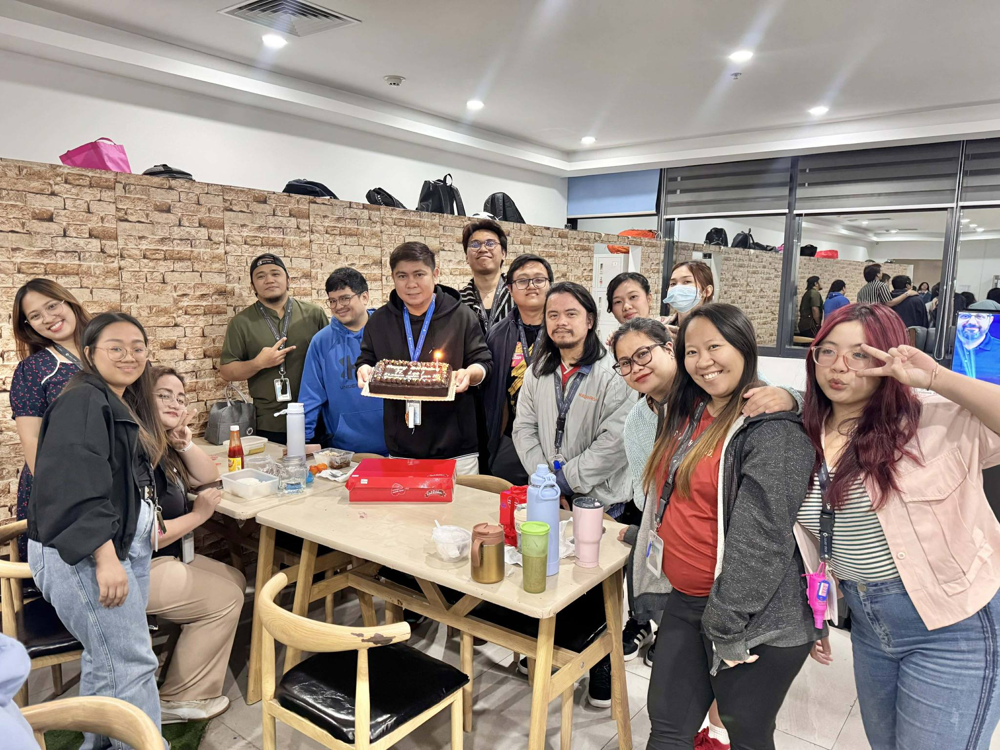
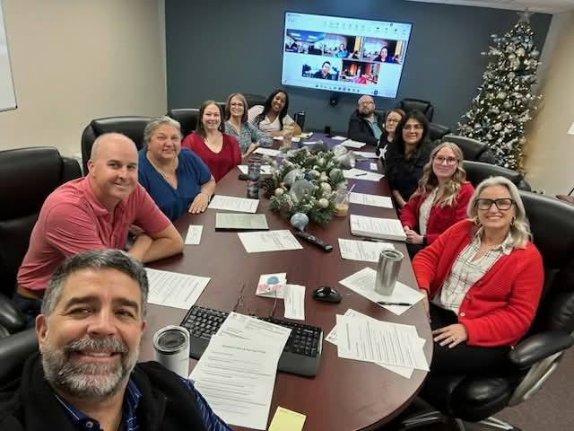
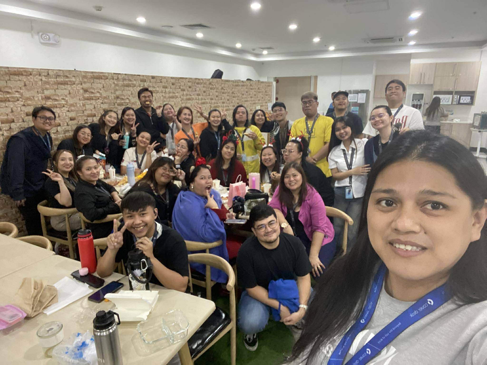
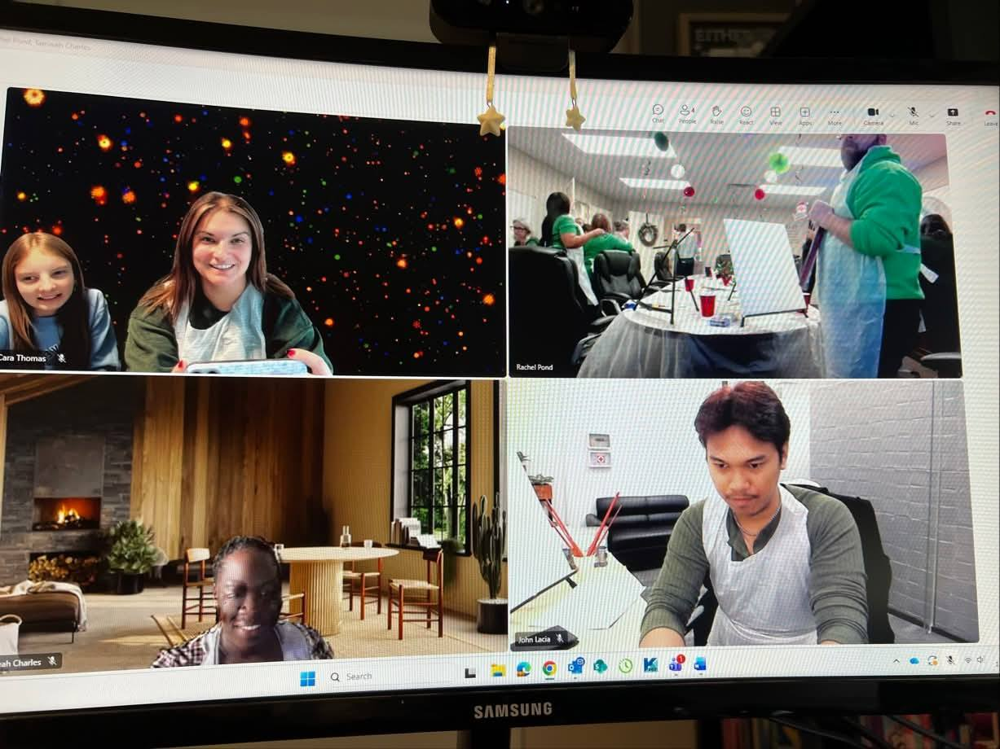

Commercial Lines · AMS Platforms · High-Volume Operations
9 months of direct commercial lines experience at Pond Insurance Agency via CoverDesk Philippines — reporting to COO level, managing 300+ client and policy records daily, and processing high-volume COIs, endorsements, renewals, and claims with zero tolerance for error.
Day-to-Day
Core functions performed daily as Account Manager Assistant at Pond Insurance Agency, supporting a portfolio of commercial landlord and property accounts across the United States.
Processed 40–100 COIs and EPIs weekly via Partner XE. Reviewed each request for non-standard requirements — additional insured language, special descriptions of operations, lender-specific wording — before generation. Confirmed ambiguous requirements directly with the Account Manager or COO before proceeding. Never sent an incorrect certificate.
Processed 10–30 non-premium endorsements weekly — address changes, mortgagee updates, additional insured additions, and policy corrections. Verified all changes against existing policy data in AMS before submission. Escalated carrier portal discrepancies to the COO rather than proceeding with inaccurate data.
Supported full renewal lifecycle — requesting loss runs from carriers, preparing renewal documentation, tracking expiration timelines, and coordinating between producers and carriers. Managed renewal records across 300+ accounts with expiration dates tracked in a self-built Excel dashboard system adopted by management for quarterly reporting.
Handled claims intake for commercial property accounts — collecting incident details, completing carrier-required forms, and coordinating submission. Primarily worked on dwelling and liability claims for landlord policy portfolios. In July 2025, processed 57 property claims for a single client following a Texas hailstorm — completed in 4–5 hours using a structured dual-form workflow.
Managed high-volume shared inboxes daily via Microsoft Outlook. Performed full sweeps from oldest to newest at shift start. Flagged unresolved items, moved to Pending, and set follow-up reminders in AMS for items awaiting external responses. Every open item closed the day with a status and a next action — nothing left ambiguous.
Trained newly hired and department-transferred employees on core insurance operations workflows — COI generation, endorsement processing, AMS navigation in Partner XE, inbox management protocols, and agency-specific compliance standards. Documented personal reference materials and process notes that became onboarding resources for incoming team members.
Proven Performance
Two situations that demonstrate how I operate under pressure, at volume, and when systems fail mid-task.
July 2025 · Texas Hailstorm · Single Client Portfolio
A commercial landlord client was hit by a hailstorm across multiple properties in Texas. 57 separate property claims needed to be filed — each requiring its own carrier form with individual property details.
Rather than processing sequentially and manually, I set up browser auto-fill for repeating fields and maintained a parallel notepad for fields that couldn't be automated. Ran two forms simultaneously throughout. Completed all 57 claims in 4–5 hours. Management noted the turnaround directly.
Pond Insurance Agency · Bank Batch Request · Mid-Task System Failure
A bank requested 140 Evidence of Property Insurance documents. I worked through the batch alongside other tasks throughout the day. On final review before submission, I identified that the policy term dates were incorrect across every single document — a carrier had silently updated their EPI generation process mid-task.
Instead of escalating the problem without a solution, I contacted the COO, advised the bank of a brief delay, independently tested and figured out the new carrier process, then restarted and completed all 140 EPIs before lunchtime the following morning.
Technical Proficiency
Live Sample
A working mockup of the renewal tracking dashboard built during my time at Pond Insurance Agency. Tracks client portfolio renewal stages, expiration timelines, premium changes, and exception flags across multiple producers and lines of business. This system replaced manual monthly calculations and was adopted by management for quarterly and annual reporting.
Behind The Work
A glimpse into the environment — remote collaboration with the US-based Pond Insurance Agency team and the CoverDesk Philippines operations floor.




Verified
From Rachel Pond, COO/Office Manager — Pond Insurance Agency. Issued February 2026 upon conclusion of contract with CoverDesk Philippines.
Juan consistently demonstrated exceptional attention to detail, professional judgment, and a proactive approach to his responsibilities. His ability to manage high volumes of time-sensitive insurance documents — certificates, endorsements, renewals, and claims — while maintaining accuracy and initiative made him a reliable asset to our operations team. He took ownership beyond his assigned scope, building process tools that are still actively used by our management team today. I recommend him without reservation for any insurance operations or administrative role requiring precision and professionalism.